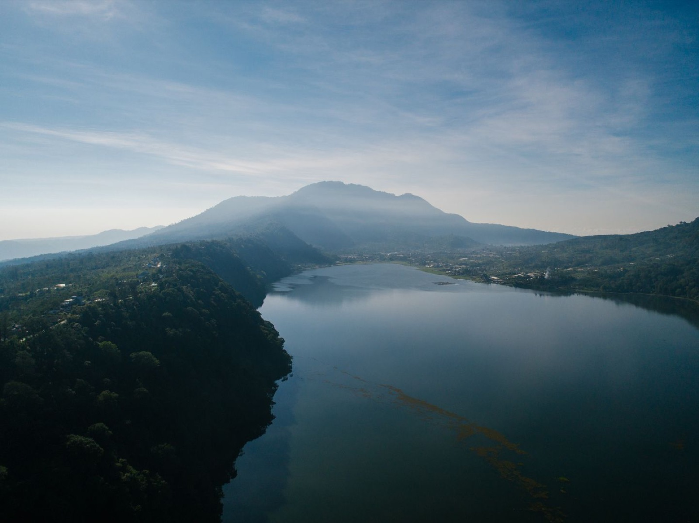
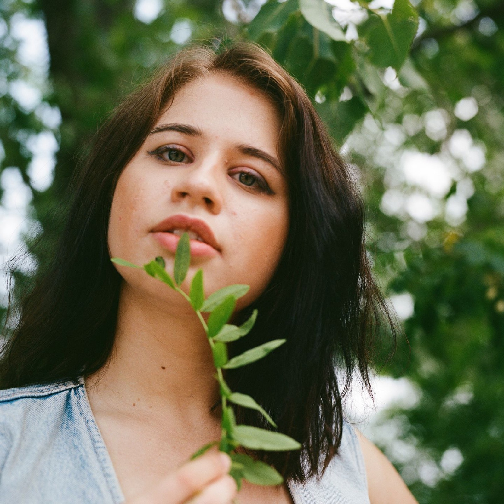
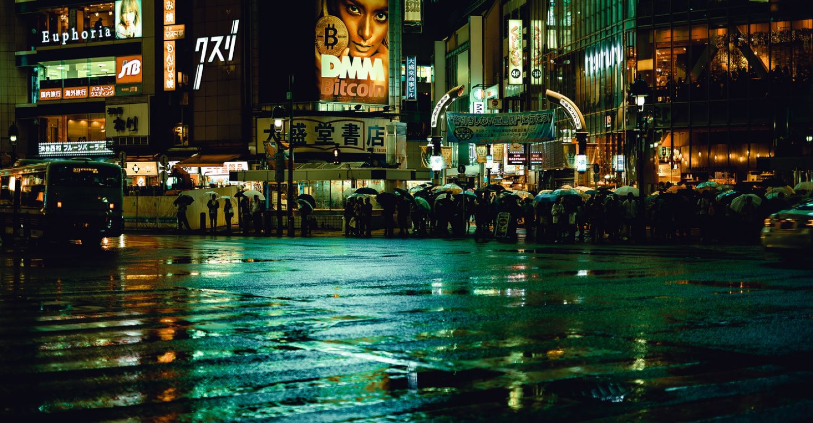
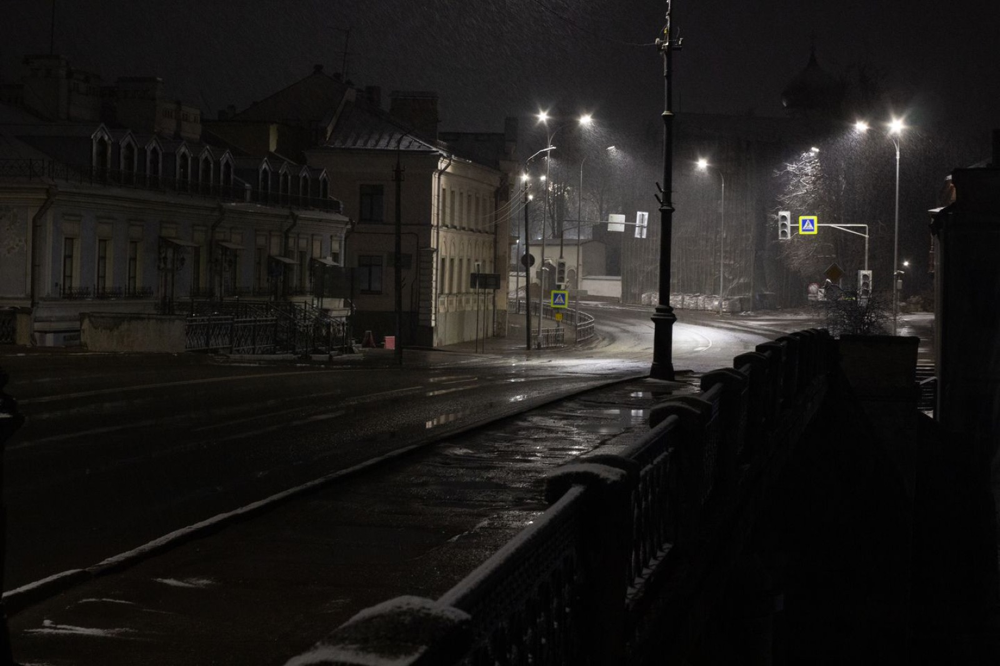
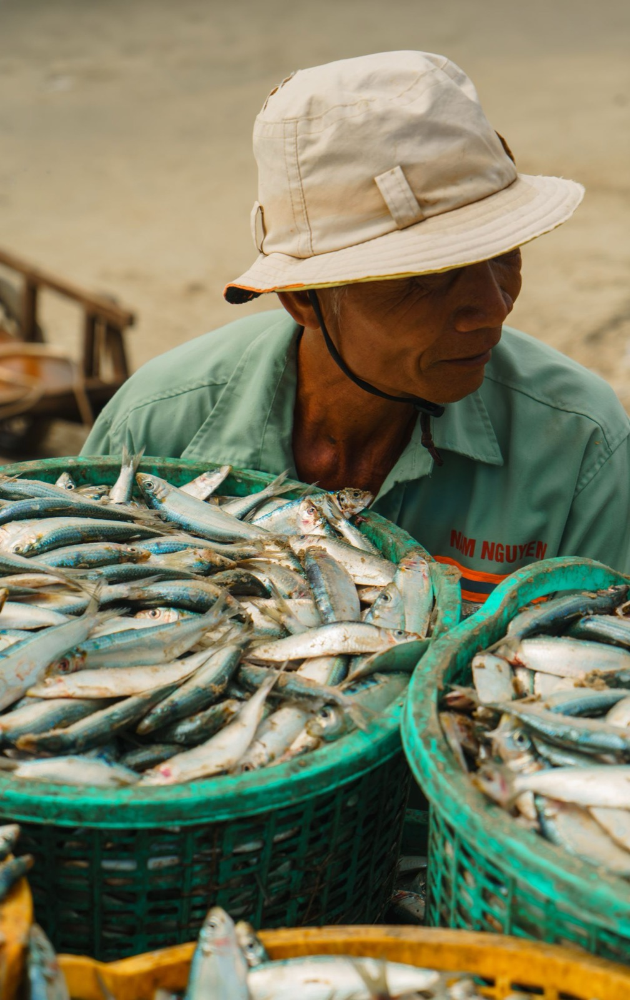
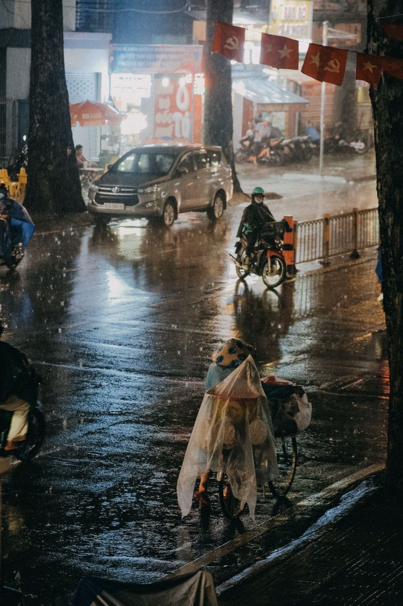

THROUGH MY VIEWFINDER
收藏目光停留过的地方。
People. Places. The in-between.

FEATURED FRAME一片寂静
12 帧 · 授权示例





世界很大，取景框很小。
← → 切换照片 · Esc 返回 · 手机支持左右滑动
浅色摄影集 / 画廊与分类 / 公开精选作品。这是这一版已经确认的范围：只让照片、留白和文字构成页面，不加入博客、商店、评论、账户或后台。
这是一份可交互视觉原型，不是已接入云存储的生产网站。照片已内嵌到离线交付版；正式版不会把整个图库内嵌进 HTML。右下角说明按钮和所有示例标记，均不属于正式网站。
推荐 Astro + TypeScript + 原生 CSS + 少量浏览器脚本，构建成静态 HTML，未来部署到 Vercel。仅展示摄影不需要数据库、登录、API 服务或常驻服务器；无需使用 Vercel Functions。
“无状态”不是“不能保存照片”。它指网站运行时不依赖会话、可写本地磁盘或数据库。照片存入对象存储，索引持久保存在 Git，两者都独立于页面服务。
Next.js 同样可以使用 output: "export" 实现纯静态。如果你希望统一到 React / Next.js 技术栈，可以选它；但这个项目用 Astro 更精简。Next.js 静态导出不能使用默认的运行时图片优化，要用预生成尺寸或自定义图片 loader。
output: "export"
先实现首页与四类画廊、可分享的静态照片详情页、大图观看；再实现本地选片与图片导出脚本、元数据校验；最后连接 Git 与 Vercel、设置域名 / 图片缓存、测试真实网络与手机浏览。此轮只完成设计原型，不执行 Git 操作或部署。
依据：Astro 静态部署 · Next.js 静态导出。核验日期：2026-10-20。
正式版推荐：Vercel + Cloudflare R2 自定义图片域名。前提是你愿意用 Cloudflare 管理域名，并以全球访问和流量成本可控为重点。如果已有腾讯云资源或更重视中国内地访问，优先评估 COS + 合适区域的 CDN；上线前必须实测 Vercel 页面与图片两条链路。
假设 1,000 张，每张原片 25 MB，则约 25 GB；每张三个展示尺寸合计 1 MB，则展示图库约 1 GB。每月 10,000 次访问、每次实际加载 20 张 × 0.25 MB，约 50 GB 客户端图片流量。实际账单还取决于缓存命中、分发路径与处理服务。
官方依据：R2 费用 · R2 公开桶与域名 · COS 域名 / CDN · COS 回源鉴权 · Vercel Blob。价格与额度以开通时官方页面为准。
代码仓库 src/pages/ 首页 / 分类 / 静态照片详情页 src/components/ Gallery / Lightbox / Photo src/data/photos.json scripts/ 图片导出、上传、索引校验 public/ 品牌图形与少量固定资源 公开图片空间（示意，尚未创建） frames/{photo-id}/{content-hash}/640.webp frames/{photo-id}/{content-hash}/1280.webp frames/{photo-id}/{content-hash}/2560.webp 私有原片空间：与公开展示桶完全分离
保持可迁移：索引存相对 objectKey，通过图片域名配置拼成 URL。不要把厂商签名链接写死在照片数据里；用内容哈希生成新文件路径，配置长期缓存，避免替换图片后一直看到旧版本。
首屏仅预加载精选图，其他缩略图按需懒加载；使用 srcset / sizes，大图只在打开时加载；为图片声明宽高避免布局跳动。图库增长后静态分页，不一次加载所有作品。分享使用真实照片详情页与 Open Graph，不依赖只有浏览器能理解的 hash。
srcset
sizes
第一期不做网页内上传与排序保存。若以后需要“打开网站就能上传 / 管理”，应另建受鉴权的管理端或接入静态 CMS；展示站仍可静态，但管理能力需要额外授权与持久写入通道。
本原型使用 Pexels License 授权素材，只用于展示版式与交互；不表示摄影者或画面人物为网站背书，也不将这些作品归为 Woody 本人作品。以下是各作品的来源。
素材已下载到项目目录，离线交付文件中已内嵌图片，无需依赖 Pexels CDN 加载。来源链接需要联网打开。正式网站应使用你拥有公开展示权的照片，并妥善处理人像肖像权与隐私。